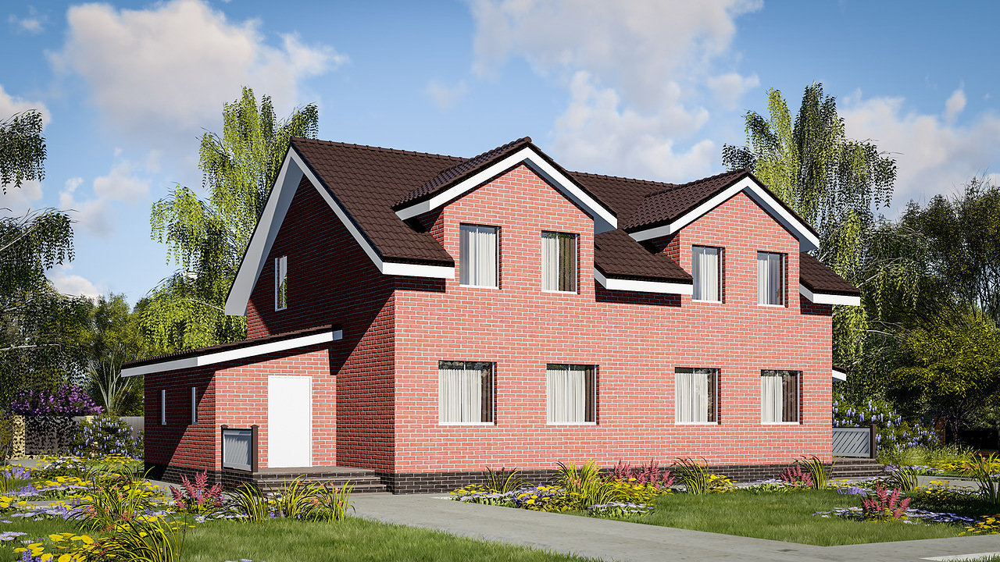
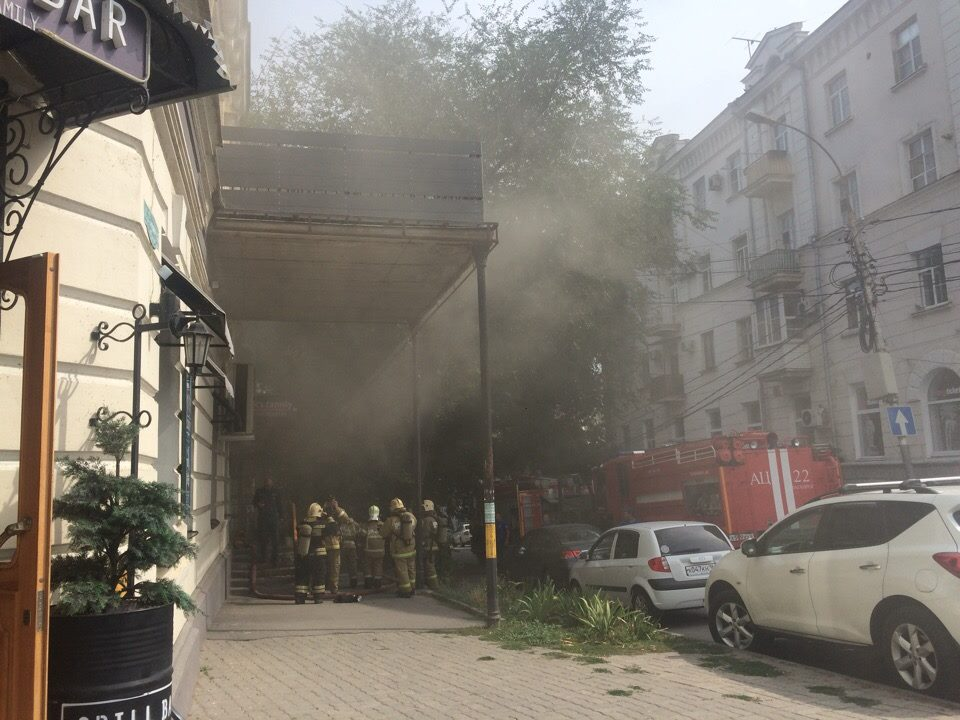

Экология и климат Таганрога
Население Таганрога
Районы и недвижимость Таганрога 
Инфраструктура города
Работа
Криминал 
Таганро́г — город в Ростовской области, порт на берегу Азовского моря (на берегу Таганрогского залива, в 70 км от областного центра — Ростова-на-Дону), образует муниципальное образование «Город Таганрог» со статусом городского округа. Является самым западным городом области.